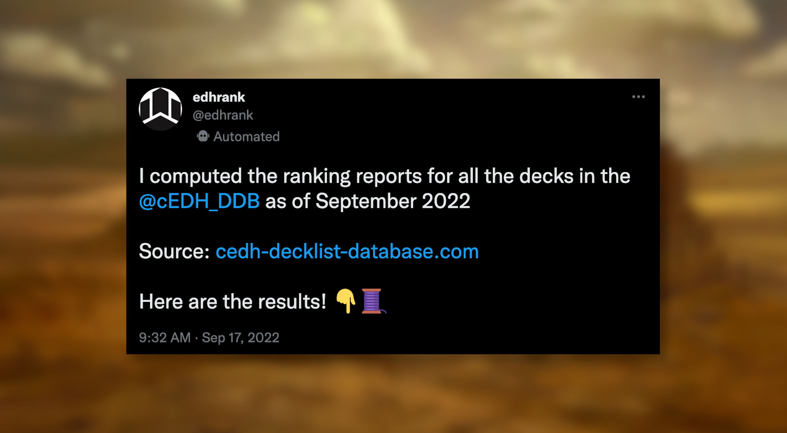

cEDH decks (Sept. 2022)
All Competitive EDH Decklist Database decks evaluated (Sept. 2022)
I used my @edhrank Twitter bot to evaluate all Competitive EDH Decklist Database decks as of September 2022.
⚠️ This campaign was done with the version edhrank_0.0.1-alpha.6.
Following Twitter threads can get messy when there are a lot of tweets, so here are the results sorted by color for easier reading.
Mono-colored decks
Allied colors decks
Enemy colors decks
Shards decks
Wedges decks
Color quadruples decks
- ⚪🔵⚫🔴 Artifice (here)
- 🔵⚫🔴🟢 Chaos (here)
- ⚫🔴🟢⚪ Aggression (here)
- 🔴🟢⚪🔵 Altruism (here)
- 🟢⚪🔵⚫ Growth (here)
All colors decks
- ⚪🔵⚫🔴🟢 WUBRG (here)
Closing Words
This was an interesting project to work on because cEDH decks are the most optimized versions of decks that you can find.
This project revealed an interesting flaw in the way I calculated the Control value, which I temporarily fixed in edhrank_0.0.1-alpha.7.
ℹ️ @edhrank is publicly available and free to use. If you want to learn how to use it, follow this guide.
If you like it or want to be kept up to date, consider supporting me by: